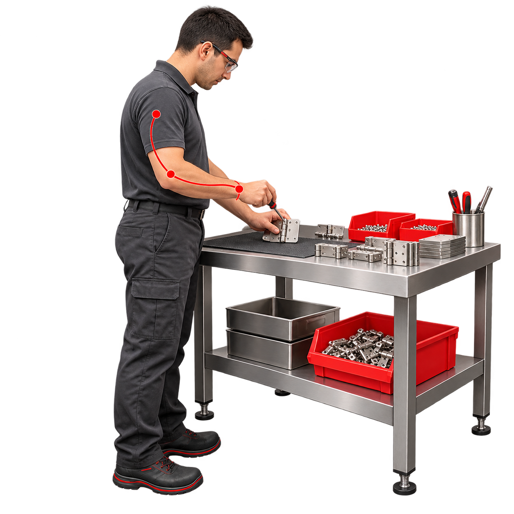
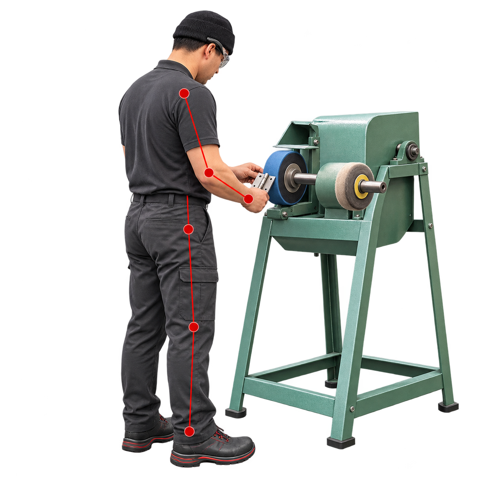
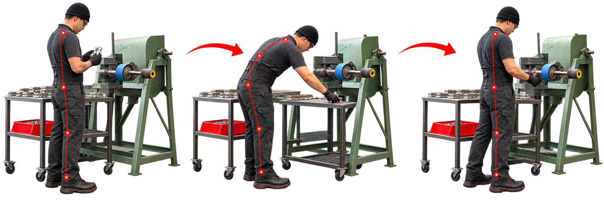
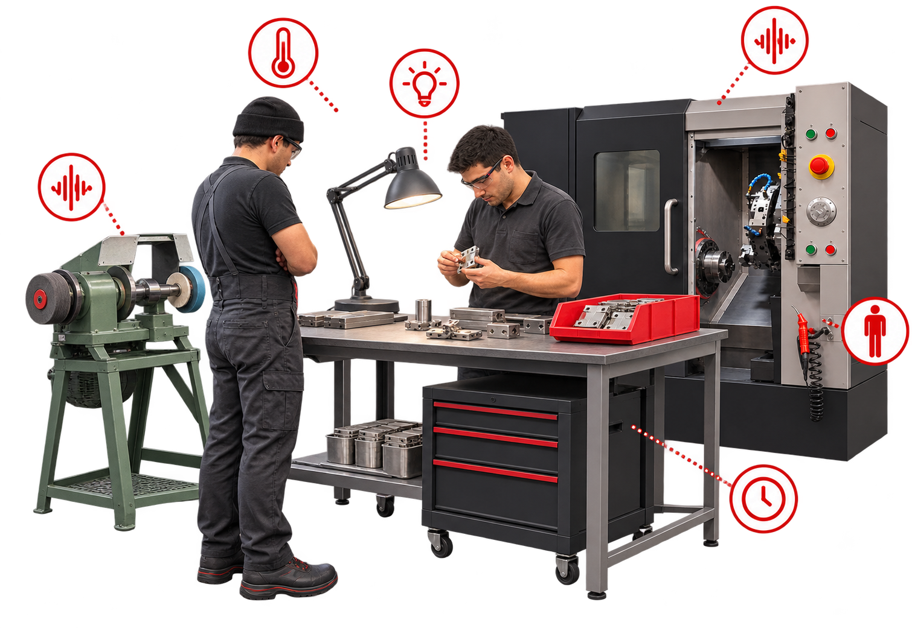
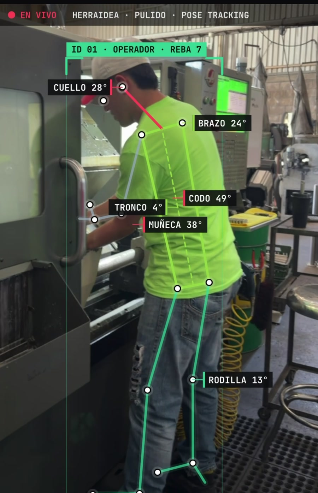
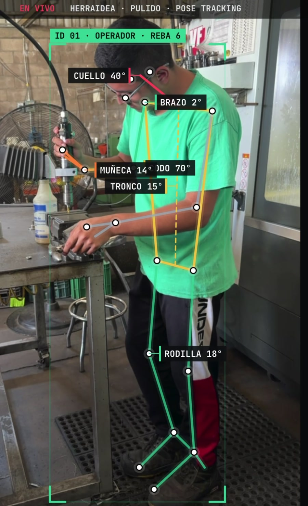
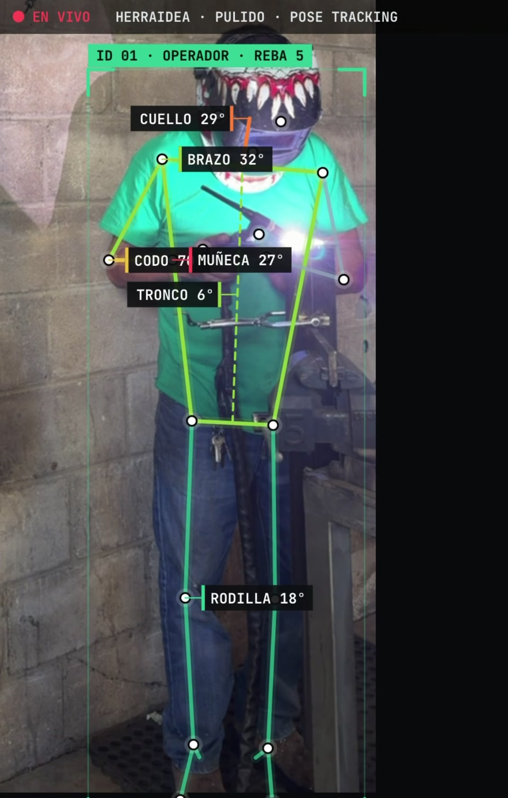
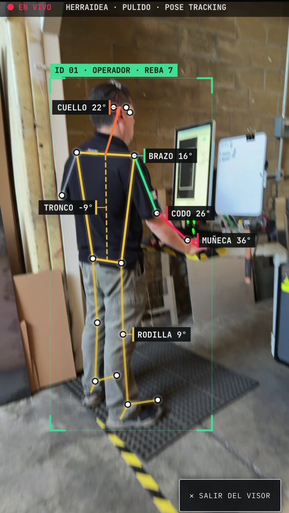

Objetivo
Describir y comparar los métodos y proponer su aplicación para fundamentar mejoras en la organización.
Investigación aplicada · Segundo parcial · Octubre 2026
Evaluación ergonómica en Herraidea
Métodos observacionales y análisis de las condiciones de trabajo para fundamentar propuestas de mejora.
01 — Introducción y marco teórico
La ergonomía analiza la relación entre las personas, las tareas y las condiciones del puesto. La evaluación observacional permite identificar exigencias posturales y orientar el rediseño del trabajo.
Los trastornos musculoesqueléticos (TME) constituyen una preocupación para la salud ocupacional. RULA, REBA y OWAS abordan la carga postural desde perspectivas complementarias. LEST amplía el análisis hacia el entorno y la organización (McAtamney & Corlett, 1993; Hignett & McAtamney, 2000; Karhu et al., 1977).
La investigación se aplica al contexto del taller de Herraidea. Se revisaron cuatro grabaciones de pantalla del programa tomadas en Herraidea el 21 de octubre de 2026. Se seleccionaron ocho capturas por archivo para describir escenas y transcribir lecturas visibles. Los resultados del ejercicio previo de pulido no se trasladan a estas nuevas tareas.
Describir y comparar los métodos y proponer su aplicación para fundamentar mejoras en la organización.
Trabajo académico con observación de campo, revisión humana y trazabilidad entre evidencia, diagnóstico y propuesta.
Cuatro registros publicados y análisis visual documentado. Se presentan lecturas automáticas REBA con limitaciones; no se atribuyen mediciones instrumentales ni mejoras ya ejecutadas.
02 — Desarrollo técnico · 35 puntos de la rúbrica
La selección depende de la tarea y del factor que se quiere estudiar. Las escalas no son equivalentes ni deben sumarse entre métodos.
Rapid Upper Limb Assessment
RULA examina una postura seleccionada. El grupo A comprende brazo, antebrazo y muñeca; el grupo B, cuello, tronco y piernas. Incorpora actividad muscular y carga (McAtamney & Corlett, 1993).
Consultar referencia ↗
Rapid Entire Body Assessment
REBA combina tronco, cuello y piernas —grupo A— con brazo, antebrazo y muñeca —grupo B—. Considera carga, agarre y actividad para la postura y el lado evaluados (Hignett & McAtamney, 2000).
Consultar referencia ↗
Ovako Working Posture Analysing System
OWAS codifica espalda, brazos, piernas y carga en observaciones a intervalos definidos. Examina la distribución de posturas durante la secuencia (Karhu et al., 1977).
Consultar referencia ↗
Evaluación global del puesto
LEST amplía la revisión hacia factores físicos, mentales, psicosociales y temporales. La organización de esta entrega sigue las cinco dimensiones y las 16 variables de la rúbrica.
Explorar las variables ↓
03 — Análisis comparativo · 20 puntos
| Criterio | RULA | REBA | OWAS | LEST |
|---|---|---|---|---|
| Enfoque | Postura individual, énfasis superior. | Cuerpo entero en una postura. | Posturas durante una secuencia. | Condiciones globales del puesto. |
| Datos | Ángulos, fuerza y actividad. | Ángulos, carga, agarre y actividad. | Códigos, carga y frecuencias. | Mediciones, observación y entrevista. |
| Ventaja | Detalle del miembro superior. | Incluye piernas y agarre. | Caracteriza la secuencia observada. | Incluye entorno y organización. |
| Límite | Postura no equivalente a jornada completa. | Exige verificar factores no visibles. | Menor detalle articular. | Requiere datos complementarios. |
| Aplicación posible | Ensamble o trabajo fino. | Pulido o manipulación de pie. | Tareas con alternancia postural. | Perfil integral de la estación. |
| Salida | 1–7. | 1–15. | Categorías 1–4. | Perfil por variable. |
Síntesis de McAtamney y Corlett (1993), Hignett y McAtamney (2000), Karhu et al. (1977) y Diego-Mas (2025a, 2025b). La aplicación a las escenas registradas se desarrolla en la sección de evidencia; las escalas no permiten clasificar productividad ni comparar personas.
04 — Evaluación global
Lectura cualitativa de los registros según las cinco dimensiones y 16 variables de la rúbrica. La observación de video se separa de las mediciones y entrevistas que no fueron aportadas.
No se aportó temperatura ni exposición térmica. El destello del registro 03 no permite valorar el ambiente térmico.
No se aportó sonometría. El audio de una grabación de pantalla no equivale a una medición de ruido.
En el registro 03 se aprecia un destello de arco. No se midieron lux ni se califica la iluminación del puesto.
Se observan herramientas y máquinas, pero no se cuantificó vibración, transmisión ni tiempo de contacto.
Los registros muestran trabajo de pie e inclinación de cabeza hacia la tarea. Ningún archivo permite confirmar una postura sostenida durante más de un minuto.
Se aprecian manipulación y cambios de alcance. No se midieron masa de las piezas, fuerzas ni frecuencia representativa de la jornada.
El video no documenta metas, plazos ni ritmo impuesto; requiere entrevista y registro del proceso.
Se aprecia coordinación de manos y herramientas. No se asigna una carga mental a partir de la imagen.
Las escenas requieren orientación visual hacia la pieza o la máquina. La intensidad y duración de atención no están cuantificadas.
La manipulación de piezas y la sujeción orientan a estudiar precisión visual y manual; faltan dimensiones y tolerancias del producto.
No observable en estos clips; requiere entrevista sobre autonomía y resolución de incidencias.
No observable; no se infiere reconocimiento, experiencia ni cualificación de la apariencia de las personas.
No se documentan oportunidades o restricciones de comunicación a lo largo del turno.
Los clips no permiten describir cooperación habitual ni apoyo entre puestos; requiere observación y entrevista.
Las horas de los nombres de archivo no describen jornada, turnos ni descansos.
No se registró un turno completo. La duración de cada archivo no se interpreta como tiempo de ciclo ni tiempo de pausa.
La nomenclatura reproduce la rúbrica de la asignatura. Ergonautas presenta una adaptación de 14 variables del método original de 16 (Diego-Mas, 2025a). Se documentará la versión antes de puntuar; este listado no es una calculadora LEST.
05 — Aplicación en Herraidea · 21 de octubre de 2026
Grabaciones reales de la prueba del programa en el taller. Se conserva el encuadre de pantalla y la superposición original; no se presentan como mediciones profesionales validadas.




| Registro / tiempo | REBA | Cuello | Tronco | Muñeca |
|---|---|---|---|---|
| 01 · 00:02.10 | 7 | 28° | 4° | 38° |
| 02 · 00:10.91 | 6 | 40° | 15° | 14° |
| 03 · 00:32.99 | 5 | 29° | 6° | 27° |
| 04 · 00:00.47 | 7 | 22° | -9° | 36° |
En las 32 capturas seleccionadas aparecen lecturas REBA de 4 a 7, rango asociado al nivel de actuación 2 en el método. Esa correspondencia no valida las entradas del programa ni confirma el riesgo final de los puestos: se requiere una aplicación revisada con carga, agarre, actividad y postura confirmados (Diego-Mas, 2025c).
El registro 02 permite estudiar miembro superior, cuello y tronco. No se publicó una puntuación RULA: el clip no muestra su tabla de cálculo ni todos los modificadores.
El registro 03 muestra variación de brazos y alcances. Sin protocolo de intervalos, carga confirmada y ciclos representativos, no se informa una categoría global ni frecuencias de jornada.
Las 16 variables se revisan cualitativamente. Ruido, temperatura, iluminación instrumental, vibración, horarios y aspectos psicosociales no se inventan a partir del video.
Descargar registro de capturas y criterios de análisis (JSON). Los originales MOV se conservaron localmente; las versiones publicadas son MP4 optimizadas, sin recortar la escena. El ejercicio REBA anterior se conserva como antecedente, no como resultado de estas tareas.
06 — Demostración tecnológica en el taller
Las grabaciones documentan el programa funcionando sobre escenas del taller, con esqueleto, ángulos estimados y rótulo REBA.
El registro 04 conserva el botón de salida del visor ampliado. El registro 03 permite explicar una limitación importante: careta y destello pueden dificultar el seguimiento de la cabeza y las manos.
Probar seguimiento en vivo ↗Seleccionar tarea, ciclo, lado y encuadre estable con el cuerpo visible.
Verificar puntos detectados y confirmar manualmente carga, agarre y factores de actividad.
Guardar postura, marca temporal, condiciones y limitaciones antes de elaborar conclusiones.
La prueba demuestra visualización en campo. No acredita precisión de ángulos, reconocimiento de identidad ni compatibilidad exhaustiva con todos los dispositivos. La cámara solo se solicita al activarla dentro del programa.
07 — Plan de mejora · Vinculado a la evidencia
Prioridades para un piloto, sujetas a revisión por producción y seguridad y salud. No se declara que estos cambios ya se realizaron ni que redujeron un porcentaje de riesgo.
Registro 02, 00:10.91: estudiar altura y orientación de la morsa para mejorar la visibilidad de la pieza sin aproximar al operario a zonas peligrosas. Registro 03: revisar orientación del útil y alcance.
Registrar ciclos completos, peso y fuerza, duración de posturas y contexto de esperas. Diseñar alternancia y pausas con esos datos; los 67,76 s aportados no representan el turno.
Capacitar al equipo para reconocer pérdidas de seguimiento, revisar estimaciones y separar el rótulo automático de una evaluación ergonómica documentada.
Registro 02 · 00:10.91. La captura conserva el cuello 40° y tronco 15° que muestra el programa; no equivale a una medición validada.
Evaluar un ajuste de altura, orientación o soporte de la pieza que favorezca su observación. Definir la solución con la persona usuaria y revisar estabilidad, resguardos, herramienta y proceso antes del ensayo.
Repetir la tarea con encuadre, lado y factores comparables. Verificar primero la calidad del seguimiento y después recalcular los métodos elegidos. Todavía no hay una grabación «después».
| Prioridad / acción | Responsable propuesto | Plazo sugerido | Indicador y evidencia |
|---|---|---|---|
| 1 · Revisar puesto de morsa y útil de sujeción | Producción y SST | Antes del ensayo | Revisión del diseño y captura comparable; sin meta porcentual inventada. |
| 1 · Verificar puntos, ángulos y ajustes del programa | Equipo evaluador y SST | Antes de usar el resultado final | Hoja de carga, agarre, actividad y lado; revisión de tablas y puntos visibles. |
| 2 · Registrar ciclos y contexto de esperas | Producción y equipo evaluador | Durante el piloto | Tiempo de ciclo documentado. Línea base de ciclo todavía no disponible. |
| 2 · Completar las variables LEST no observables | SST y personal del puesto | Antes del diagnóstico global | Mediciones e entrevistas por variable, con fecha y procedimiento. |
| 3 · Revisar la mejora | Producción y equipo evaluador | Después de la intervención aprobada | Mismo método, condiciones comparables y evidencia antes/después. Ninguna acción se marca como cerrada. |
08 — Conclusiones y entrega
Las cuatro grabaciones permiten documentar el funcionamiento del seguimiento y seleccionar escenas de interés: orientación de la cabeza hacia la tarea, manipulación con las manos y cambios de alcance.
El registro 02 justifica estudiar la relación entre pieza, morsa y visibilidad. El registro 03 muestra por qué la careta y el destello exigen revisar las detecciones. El archivo 04 ilustra la interfaz, pero su duración no permite caracterizar la tarea.
RULA y REBA aportan detalle postural; OWAS requiere una secuencia y un protocolo de muestreo; LEST incorpora factores que la cámara no mide. La conclusión defendible es un diagnóstico observacional preliminar con propuestas de verificación, no una certificación del puesto ni un ranking de operarios.
Incluye marco técnico, comparación de métodos, cuatro videos, capturas trazables, análisis y plan de mejora. La impresión conserva imágenes y tablas; los videos se consultan desde la web.
Alcance de esta entrega: evidencia audiovisual y revisión visual académica. No se aportaron masas, fuerzas, tiempos de exposición representativos, mediciones ambientales, entrevistas ni una prueba posterior a la mejora; esas variables se señalan como no determinadas, sin sustituirlas por datos de ejemplo.
09 — Referencias bibliográficas · APA 7
Organización basada en la rúbrica docente y el reporte entregados por el equipo. Se corrigió la denominación de TME y se omitieron porcentajes de impacto no verificados del reporte base.